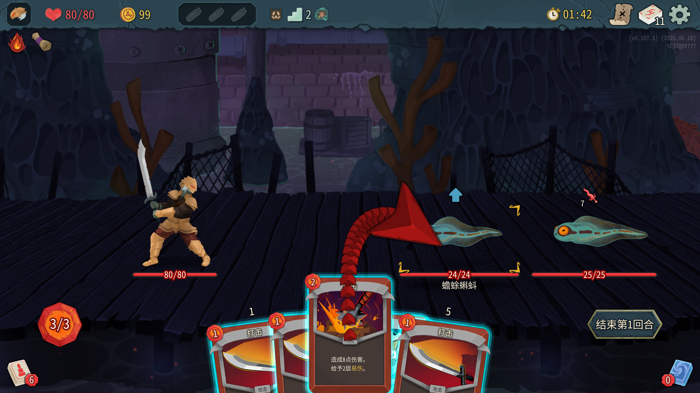
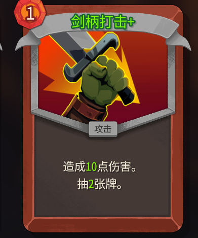
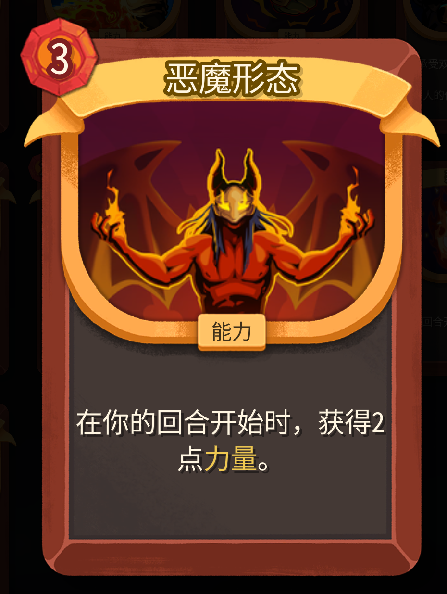
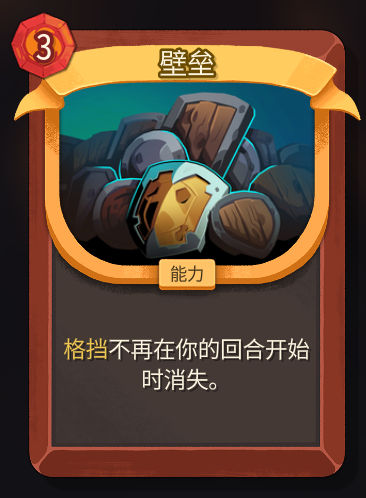
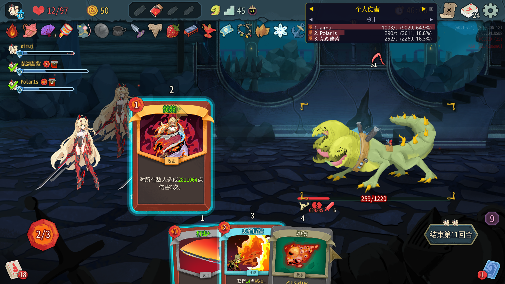
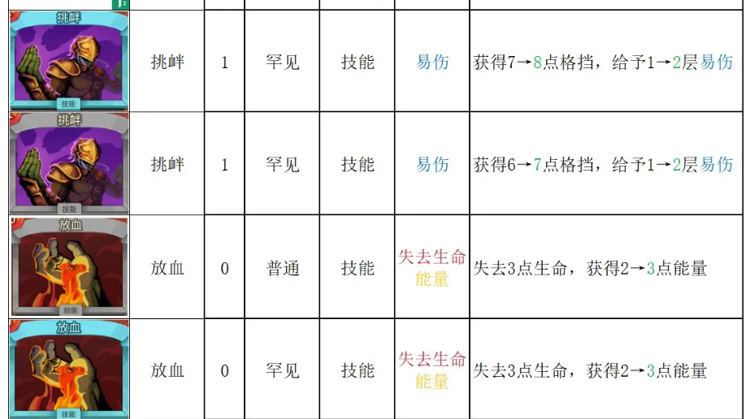
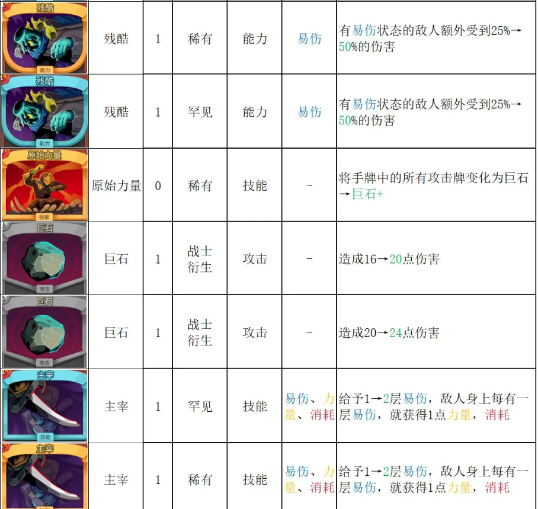
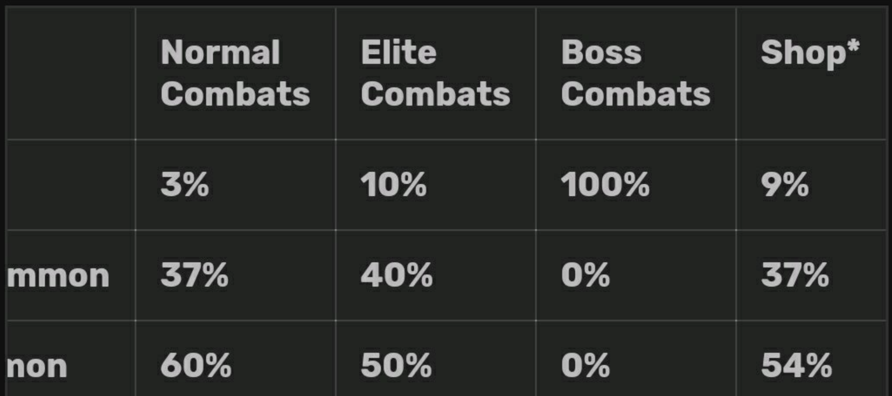

杀戮尖塔2铁甲战士卡牌数值拆解
一、杀戮尖塔2是一个怎样的游戏？
杀戮尖塔2（Slay the Spire 2） 是由独立游戏工作室 Mega Crit 开发的 Roguelike 卡牌构筑游戏（Deckbuilding Roguelike，简称 DBG）。2025 年以 Early Access 形式登陆 Steam，上线首周即获得 98% 好评率，Steam 同时在线峰值超过 15 万人。
1.1游戏机制
杀戮尖塔2的核心机制是Roguelike卡牌构筑：玩家沿分支地图爬塔，战斗后从随机卡牌中选择加入卡组，逐步构筑专属流派。战斗为回合制，每回合消耗能量打出攻击/技能/能力牌，敌人通过意图系统暴露行动。卡组循环、资源分配与遗物增益叠加，构成"随机中获得确定性"的策略深度。

1.2目标人群
| 维度 | 画像 |
| 年龄 | 18~35 岁，以大学生和年轻上班族为主 |
| 游戏经验 | 丰富的中重度游戏玩家，有卡牌/策略游戏基础 |
| 思维偏好 | 喜欢分析、规划、优化，享受"聪明决策"的正反馈 |
| 游戏时长 | 单局 30~60 分钟，碎片化友好但深度足够 |
| 核心诉求 | 在随机中寻找确定性，通过策略和知识碾压系统 |
大致可以归类为诸如《死亡细胞》《雨中冒险》等 Roguelike 的玩家，习惯了"每局都不同"的体验。他们在 STS2 中找到了 Roguelike 和策略思考的结合点——随机性提供新鲜感，策略提供可控感。
1.3数值对于STS2来说的重要性
DBG 的留存曲线和传统 RPG 完全不同。RPG 的留存靠"内容消耗"（新关卡、新剧情），DBG 的留存靠"深度探索"（新流派、新组合）。
STS2 目前有：
5个职业
每个职业约 60~70 张可用卡牌
200+ 种遗物
数十种药水和事件
一个职业的卡牌组合 ≈ ≈ 1.6 × 1017 种可能的卡组。即使只算有竞争力的流派，每个职业也至少有 5~8 个成型方向。这意味着对一个硬核玩家来说，STS2 的"可消耗深度"是数百小时级别。而支撑这个深度的底座，就是数值框架。 如果数值不平衡（例如某个流派过于强势），玩家会迅速收敛到最优解，数百小时的内容会在几小时内被"消耗"掉。数值平衡直接决定了游戏的"有效可玩时长"，由此，本文将详细描述我在游玩过程中对于本游戏的数值拆解理解和体验。
二、数值平衡在杀戮尖塔2中的作用与魅力
以第一层初始的战斗为例，一个怪物的意图为 攻击8 - 防守5 - 力量升级2 的循环，作为只有初始牌的玩家在降低战损的前提下依靠有限的资源（每回合3费 - 5牌）去寻求全局战损低的最优解（如敌方攻击8回合，既可以选择贪心算法尽可能多的防守，也可以选择全局最优解小幅度掉血换取费用空间来尽可能快的击杀）。
然而，在玩家攀爬过程中，怪物机制与数值的逐层增加，对于玩家局外构筑卡组和局内策略确定提出了更高的要求。站在游戏制作的角度，有诸多角度需要去考虑来达成数值平衡——在动作游戏中，物理引擎决定了角色怎么跑、怎么跳、怎么碰撞。在 DBG 中，数值就是物理引擎——它决定了：1 费能买到什么效果、一张牌比另一张牌强多少、什么时候玩家感到"赚到了"、什么时候感到"亏了"、哪个流派在什么条件下强势、在什么条件下弱势。在fps游戏可以说"手感好"而不一定能量化，但 DBG 的每一个设计决策都天然是可量化的——因为卡牌本身就是数字的载体。这就决定了数值策划在 DBG 开发中不是"辅助角色"，而是核心设计师。一张牌的效果描述可能来自策划的创意，但它的强度能否成立、必须经过数值模型的验证。
2.1锚定基准
1能量 ≈ 6伤害 ≈ 5格挡 ≈ 1抽牌
以上等式可以作为我们看待杀戮尖塔2设计游戏卡牌数值时的数值当量公式，这套显式的费效比逻辑可以帮助玩家快速上手和理解游戏卡牌中的数值特点，以几张战士的白卡（基础卡）举例：
剑柄打击+ 作为一个游戏前期就会大概率（65％）出现的白卡，却拥有着全游戏几乎最高的费效比——在1费的消耗下获得了5伤害*2与抽牌*2，即（2+2）/1=4的费效比/数值当量。与此类似，耸肩无视（1费-8格挡-抽1）也拥有防御端超高的2.6数值当量，与剑柄打击共同构成战士前期必拿白卡之二。
从这两张卡可以清晰看出数值当量对没有特殊机制的卡的巨大影响，在设计卡牌和玩家审视一个卡牌的夯拉时，数值当量可以作为一个最直观的参考量。

图2.1.1
2.2 费用 × 稀有度 × 效果
在基本的数值之外，STS2对于卡牌的多元评价体系可以从费用-稀有度-效果3个维度展开：
费用 = 即时成本（这张牌占用多少能量和手牌槽位） 稀有度 = 获取成本（这张牌有多难抓到）——STS2中为白/蓝/金 - 54.2%-35.7%-10% 效果 = 直接产出（伤害/格挡）+ 间接产出（buff/抽牌/能量/永久加成）
根据杀戮尖塔2 v0.107.1版本的战士卡组，对费用进行分类统计得到以下表格：
| 费用 | 卡牌数 | 伤害牌数 | 平均伤害 | 伤害效率 | 防御牌数 | 平均格挡 | 格挡效率 | 混合/功能 | 设计关键词 |
| 0 费 | 12 | 4 | 9.2 | — | 0 | — | — | 12 | 条件触发/资源转换/高杠杆 |
| 1 费 | 48 | 19 | 9.6 | 1.60 | 9 | 8.1 | 1.62 | 49 | 设计最丰富/基准附近/发动机 |
| 2 费 | 19 | 7 | 11.7 | 0.98 | 3 | 19.3 | 1.93 | 19 | 溢价补偿/条件爆发/能力牌 |
| 3 费 | 7 | 4 | 24.8 | 1.38 | 0 | — | 0.00 | 7 | 规则改变/高爆发/高投资 |
| X 费 | 1 | 0 | — | — | 0 | — | — | 1 | 能量放大器 |
通过对战士卡牌的分费用总览，可见——
0 费牌全是「预付费」：没有一张是无条件赚费，要么以血量为代价（放血/烙印/祭品），要么有条件（消耗堆≥3、本回合失血、消耗手牌），否则能量经济会崩溃。 1 费牌占了 55% ： 是设计最密的档位，既有严格锚定的打击/防御，也有明显超模的剑柄打击（9伤+抽1）、耸肩无视（8甲+抽1）。 2 费牌攻击效率反而低于 1 费：这是「集中消费」的灵活性代价。但防御牌在 2 费档位很赚（岿然不动 30 甲、血墙 16 甲、火焰屏障 12 甲+反伤）。 3 费牌只有两类：要么改变规则（壁垒/恶魔形态/腐化），要么打爆发（重锤 28 / 彼岸咆哮 32 AOE / 凌虐 减敌人力量攻防同起）。 X 费只有旋风斩一张：说明设计师对 X 费非常谨慎——它是能量放大器，后期能量越多越赚。 此外稀有度不等于数值强度：很多金卡即时数值为 0，但提供规则质变；白卡里也有超模牌。
此外，对于稀有度维度的定价逻辑，应当给出更详细的阐释——稀有度并不直接等于"数值更高"。与直觉相悖的是，很多金卡的单费数值效率反而低于白卡——例如金卡"恶魔形态”（3 费，每回合+2 力量）的即时数值为 0，而白卡"剑柄打击"（无+）（1 费，9 伤+抽 1）的即时当量高达 2.5 费。
稀有度的真正含义是"效果的独特性"和"组合的天花板"。总的来说，可以看出白卡提供了稳定的基准和润滑，蓝卡提供了流派的核心组件，而金卡提供了改变规则的质变。三者不是"弱→中→强"的数值梯度，而是"通用→专用→革命"的功能梯度，在我看来这正是杀戮尖塔2迷人所在——他打破了传统Roguelike中单一的数值增长体系，而用极其丰富的卡牌构建流派来代替。
2.3能量、血量、金钱的三角平衡
DBG 中有三种基础资源，每一种都和其他两种形成交换关系：能量 → 血量：打出攻击牌消灭敌人 → 减少受到的伤害 能量 → 金钱：选择篝火升级、击败怪物掉落金钱/卡牌/遗物奖励血量 → 能量：放血、祭品等牌用血量换能量 血量 → 金钱：选择精英路线（掉更多血换更好奖励） 金钱 → 能量：购买遗物 金钱 → 血量：购买药水/回复这种三角交换关系是 DBG 数值体系在构架层面给玩家的选择和博弈。每一局游戏，玩家都在这个三角上做资源配置。数值策划的任务不是消除这种紧张（那样游戏就无趣了），而是确保每一种交换都"有道理但不够好"（正如在任何游戏中都找不出最完美的武器或皮肤）——让玩家每次选择都有权衡。
2.4回本周期：能力牌和遗物的投资模型
STS2中有一类不能用数值当量简单计算——能力牌和遗物，他们却改变了整个游戏基本的运作逻辑，让玩家有了操纵角色质变（改变游戏规则）的能力，是游戏机制的主要创新点和玩家的爽感来源大头。能力牌和遗物有一个独特的数值特征：它们消耗当前资源，换取未来的持续收益。这就需要引入"回本周期"的概念。

图2.4.1
以金卡"恶魔形态"为例：投入：3 能量（当前回合放弃约 18 伤害或 15 格挡的产出，在单回合可能造成极大战损）收益：每回合力量+2（力量每层≈每张攻击牌+1 伤害）回本计算：假设每回合打出 1 张攻击牌 → 第 1 回合累计 +2 伤，第 2 回合累计 +4 伤，……需要约3 回合才能回本（累计 +18 伤 = 3 费当量，单回合假如打出3张打击为例）可以看出恶魔形态为X2收益模型。这就创造了有意义的决策：你需要判断当前战斗的预期回合数，来决定是否值得投入 3 费打出这张能力牌。（在实际情况中，恶魔形态通常由免费的能力药水打出，为极强的0费收益）

图2.4.2
同理，"壁垒"（3 费，格挡不消失）的回本周期取决于你能产生多少格挡。在格挡流卡组中壁垒 1 回合回本，在非格挡流卡组中壁垒可以说永远无法回本。
这就是"质变卡"的定价特征——它不是对所有卡组都值 3 费，而是对特定卡组值 ∞ 费，对其他卡组值 0 费。
2.5组合爆炸与平衡边界
STS2 的卡组构筑本质上是一个组合优化问题。玩家的目标是：在约 70 张可选卡牌中选出 10~20 张，使其在对抗不同敌人时拥有最高的期望胜率。理论上，杀戮尖塔2可以构成 ≈ 1.6 × 1017 种可能的卡组。即使只考虑"合理的"选择，也有数万种。策划不可能穷举测试所有组合——所以平衡的核心策略不是"确保所有组合强度相同"，而是：确保基准强度：任何"随手组合"的卡组都能打过前两层（保证新玩家体验）确保上限可控：最强的几个流派之间差距不能过大（保证竞技深度）掐断乘性崩坏：当两个机制相乘时（如力量翻倍 × 多段打击 × 易伤），要确保最终数值不会爆炸其中第三点尤其关键。在 STS2 战士的数值体系中，我识别出了以下可能产生乘性崩坏的关键节点：
| 乘性链路 | 如果失控… | 设计中的约束 |
| 力量 × 多段攻击 × 易伤 × 攻击翻倍 | 一张攻击牌打出数百伤害 | 易伤上限、力量获取速度、多段攻击的基础数值偏保守 |
| 格挡翻倍 × 全身撞击 | 防御 = 攻击，消灭角色分工 | 全身撞击需要格挡牌和攻击牌的平衡手牌 |
| 消耗 × 黑暗之拥 × 无惧疼痛 | 无限抽牌+无限护甲 | 消耗堆有限、需要持续获取消耗燃料 |
数值策划在 DBG 中的核心职责不是"让所有牌都平衡"，而是"找出哪些组合会崩、然后用数值或机制掐断它们"。

图2.5.1
图2.5.1为我和朋友联机战士易伤流，在对主宰/熔融之拳去消耗后叠加三破击的易伤，主宰吸取力量指数级增长的后果——数值彻底崩塌，玩家轻易战胜了系统。但是值得一提的是，这样的种子并不多见，需要的触发条件也十分苛刻。
这样的边际崩塌是数值平衡中需要极力避免的，在特定卡牌组合/遗物机制下可能触发的数值指数级膨胀，是可以出现但概率极低来作为偶发激励。
2.6 数值迭代——从卡牌胜率和抓取率看版本补丁 游戏的数值系统到了这一步是大作已成，而迭代调优是让它从"能用"变成"耐玩"，它不是一次性动作，而是一个上线后持续运转的闭环。杀戮尖塔2自在steam发布以来一共上线了近20次更新补丁（0.98.0-0.109.0），其中对卡牌的数值调整几乎涵盖了每一次补丁，而卡牌或遗物机制的革新对于安东尼（制作人）来说可以说是谨小慎微的。 通过统计数据，我们可以去重点关注以下几项——
玩家数据：某张卡/某个角色使用率 <10% → 可能太弱；>50% → 可能太强
通关率：某个关卡通关率骤降 → 难度曲线可能断层
异常build：玩家社区是否发现了数值设计中没预见的组合？
以下，我将以beta patch v0.109.0中对于战士卡组的几项更新为锚点，重点叙述卡牌数值/稀有度对于卡牌强度/流派构建的影响：


图2.6.1
【图中 同卡牌前者为v0.108，后者为v0.109.0】 总的来说，原始力量增强（生成巨石伤害提高20%），主宰稀有度从罕见提升为稀有（出现概率大幅下降）；残酷稀有度稀有降低为罕见。放血和挑衅稀有度对调，挑衅的格挡升级前后降低1点。
那么在上一版本中，以上卡组的表现如何呢？ 注：数据来源DamageMeter社区，统计了近1000+玩家的卡牌使用数据【版本v0.107.0-0.108.0，进阶10难度】
| 卡牌名称 | 角色 | 费用 | 稀有度 | 持有率 | 持有胜率 | 选取率 | 胜率(选) | 胜率(跳) | 胜率差 | 提供次数 | 持有局数 |
| 放血 | 铁甲战士 | 0 | 普通 | 40.42% | 16.00% | 38.47% | 26.89% | 33.24% | -6.4% | 30,925 | 9,974 |
| 挑衅 | 铁甲战士 | 1 | 罕见 | 12.22% | 20.76% | 40.51% | 26.62% | 35.09% | -8.5% | 10,572 | 3,015 |
| 原始力量 | 铁甲战士 | 0 | 稀有 | 1.87% | 16.67% | 9.73% | 23.94% | 37.26% | -13.3% | 4,852 | 462 |
| 主宰 | 铁甲战士 | 1 | 罕见 | 17.15% | 26.84% | 54.40% | 31.43% | 34.61% | -3.2% | 10,219 | 4,232 |
| 残酷 | 铁甲战士 | 1 | 稀有 | 3.06% | 17.24% | 28.59% | 29.77% | 37.82% | -8.1% | 4,477 | 754 |
【注意，数据中有一组反直觉的数据：胜率差 = 胜率(选) − 胜率(跳)，在这个样本里五张牌全部为负。但如果直接据此判定它们都是"陷阱牌"，会犯一个典型的统计错误：把相关当成因果。
在总卡牌数量高达20-40张卡的构建过程中，没有一张卡是无可替代的，也没有一张卡是可以涵盖抽牌-加费-启动-终端等等效用模式，所以胜率差这一数据，我们应尽量以相对差值来横向对比。】
而这一次的PATCH，对于卡牌的最大动刀就是稀有值，然而在整局游戏中，普通-罕见-稀有 分别的出现概率为 54.2%-35.7%-10%，可能会让我们觉得普通和稀有卡的置换在玩家抓取上来说影响并没有那么大。
实则不然，在官方给出的具体战斗（普通怪-精英-BOSS战-商店）中，这三种卡的抓取概率差值是巨大的。

图2.6.3
如上图2.6.3中，在一次战斗中会给出3个卡牌奖励，那么在几乎占了游戏流程80%的普通战斗中，出现至少2个普通牌的概率为64.8%，普通牌在玩家的卡组构建选择中可以说至少占到了三分之二。在此之外，稀有簰的概率更是肉眼可见的几乎只会在BOSS战（每层一个，一共2个）中产出，而运气爆棚（有能力打多精英的卡组毕竟占少数）时才会在普通战中出现稀有簰。
在此基础上，这一次改动的主要方向可见一斑了，策划希望通过压缩放血、主宰这样超高抓取率和胜率（几乎适配战士所有流派，且为卡组刚需）在卡组构建中的出场率，来达到不大砍数值/机制也能对卡组构建产生足够影响的目的。
从此看得出，在迭代中我们应该怎样去获取数据/分析数据/更改数值——
首先，先采集使用率和胜率交叉判断——高使用高胜率共同出现在一张卡上才是真过强； 诊断出病灶后，优先改数值而不是改机制，因为数值可逆，而机制是硬伤； 其次，尽量做到一次只改一个变量，改完灰度小步验证，我的目标改动是否误伤其他流派？ 这样的迭代，是一个跟着版本持续运转的闭环。
附表：战士卡牌费用-效果表
基准锚定：1能量 ≈ 6伤害 ≈ 5格挡 ≈ 1抽牌
0.1起始卡组（初始10张：5打击 + 4防御 + 1痛击）
| 卡牌 | 费用 | 攻击 | 格挡 | Buff/Debuff | 数值当量 |
| 打击 | 1 | 6 | — | — | 6伤 = 1.00费基准 |
| 防御 | 1 | — | 5 | — | 5格挡 = 1.00费基准 |
| 痛击 | 2 | 8 | — | 易伤×2 | 8伤 + 2易伤 |
0.2普通卡（白卡）
| 卡牌 | 费用 | 攻击 | 格挡 | Buff/Debuff | 数值当量 |
| 愤怒 | 0 | 6 | — | 复制入弃牌堆 | 6伤(0费)，污染卡组 |
| 放血 | 0 | — | — | 失3血，+2能 | +2能 |
| 飞剑回旋镖 | 1 | 3×3随机 | — | — | 9伤 |
| 剑柄打击 | 1 | 9 | — | 抽1 | 9伤 + 抽1 |
| 全身撞击 | 1 | =当前格挡 | — | — | 0~N伤 |
| 熔融之拳 | 1 | 10 | — | 易伤翻倍，消耗 | 10伤 + 易伤翻倍 |
| 闪电霹雳 | 1 | 全体4 | — | 易伤×1(全体) | 4AOE + 全体易伤 |
| 双重打击 | 1 | 5×2 | — | — | 10伤 |
| 铁斩波 | 1 | 5 | 5 | — | 5伤+5格挡 |
| 头槌 | 1 | 9 | — | 弃牌堆1张置顶 | 9伤 + 牌序调度 |
| 突破 | 1 | 全体9 | — | 失1血 | 9AOE |
| 预备打击 | 1 | 7 | — | 本回合力量+2 | 7伤 + 临时力量+2 |
| 坚毅 | 1 | — | 7 | 随机消耗1张 | 7格挡 + 消耗 |
| 破灭 | 1 | — | — | 打出并消耗抽牌堆顶牌 | 高风险调度 |
| 耸肩无视 | 1 | — | 8 | 抽1 | 8格挡 + 抽1 |
| 武装 | 1 | — | 5 | 升级手牌1张 | 5格挡 + 升级 |
| 战栗 | 1 | — | — | 易伤×3，消耗 | 3层易伤 |
| 完美打击 | 2 | 6+N×2 | — | N=名字含'打击'的牌数 | 6~20+伤 |
| 余烬 | 2 | 18 | — | 随机消耗1张 | 18伤 |
| 血墙 | 2 | — | 16 | 失2血 | 16格挡 |
0.3罕见卡（蓝卡）
| 卡牌 | 费用 | 攻击 | 格挡 | Buff/Debuff | 数值当量 |
| 欺凌 | 0 | 4+2×易伤 | — | 每层易伤额外2伤 | 依赖易伤层数 |
| 旋风斩 | X | 全体5×X | — | — | 5X AOE |
| 怨恨 | 0 | 5×2 | — | 本回合失血则攻击2次 | 5~10伤 |
| 恶魔护肩 | 0 | — | =当前格挡 | 失1血，转移给盟友 | 格挡转移 |
| 狂怒 | 0 | — | 每攻击牌+3 | — | 0费按攻击牌数叠甲 |
| 战斗专注 | 0 | — | — | 抽3，本回合禁抽 | 抽3 |
| 暴走 | 1 | 9 | — | 本场战斗伤害+5 | 9伤 + 成长 |
| 拆卸 | 1 | 8×2 | — | 敌人有易伤则攻击2次 | 8~16伤 |
| 灰烬打击 | 1 | 6+3×N | — | N=消耗牌堆牌数 | 6~N伤 |
| 劫掠 | 1 | 6 | — | 抽牌直到抽到非攻击牌 | 6伤 + 过牌 |
| 御血术 | 1 | 15 | — | 失2血 | 15伤 |
| 被遗忘的仪式 | 1 | — | — | 本回合消耗过牌则+3能 | 条件+3能 |
| 地狱之刃 | 1 | — | — | 随机攻击牌加入手牌且本回合0费 | 不稳定资源 |
| 巨像 | 1 | — | 5 | 有易伤敌人对本玩家伤害-5 | 5格挡 + 减伤 |
| 燃烧契约 | 1 | — | — | 消耗1张，抽2 | 消耗1换抽2 |
| 挑衅 | 1 | — | 7 | 易伤×1 | 7格挡 + 1易伤 |
| 邪眼 | 1 | — | 8+8 | 本回合消耗过牌则额外8格挡 | 8~16格挡 |
| 战鼓 | 1 | — | — | 抽2，消耗时+1能 | 抽2 + 延迟回能 |
| 重振精神 | 1 | — | 5×N | 消耗手中所有非攻击牌，每张+5格挡 | 0~N格挡 |
| 主宰 | 1 | — | — | 给予1易伤，每层敌人易伤→力量+1，消耗 | 易伤转力量 |
| 燃烧 | 1 | — | — | 能力：力量+2 | 永久力量+2 |
| 撕裂 | 1 | — | — | 能力：每回合失血则力量+1 | 自残转力量 |
| 无惧疼痛 | 1 | — | — | 能力：消耗牌时+3格挡 | 消耗发动机 |
| 凶恶 | 1 | — | — | 能力：给予易伤时抽1 | 易伤发动机 |
| 岩石铠甲 | 1 | — | — | 能力：获得4层护甲 | 4甲常驻 |
| 浴火 | 1 | — | — | 能力：回合开始失1血，全体6伤 | 每回合6AOE |
| 染血 | 1 | — | — | 能力：每回合第3张攻击牌复制入手牌 | 攻击复制 |
| 上钩拳 | 2 | 13 | — | 虚弱×1 | 13伤 + 虚弱 |
| 无情猛攻 | 2 | 14 | — | 下张攻击牌0费 | 14伤 + 降费 |
| 与我一战 | 2 | 5×2 | — | 敌人+1力量 | 10伤，副作用 |
| 火焰屏障 | 2 | — | 12 | 每受击一次反伤4 | 12格挡 + 反伤 |
| 跃跃欲式 | 2 | — | — | 每手牌1攻击牌+1能，本回合禁能 | 攻击牌数换能量 |
| 惊逃 | 2 | — | — | 能力：回合结束随机打出1张手牌攻击牌 | 自动化 |
| 彼岸咆哮 | 3 | 全体16 | — | 回合结束时若在消耗堆则再次打出 | 16AOE × 2条件 |
| 踩踏 | 3 | 全体12 | — | 本回合每攻击牌-1费 | 3→1费AOE |
| 重锤 | 3 | 22 | — | — | 22伤 |
0.4稀有卡（金卡）
| 卡牌 | 费用 | 攻击 | 格挡 | Buff/Debuff | 数值当量 |
| 契约终结 | 0 | 全体17 | — | 消耗堆≥3张触发 | 17AOE |
| 祭品 | 0 | — | — | 失6血，+3能，抽3，消耗 | 3能+抽3 |
| 烙印 | 0 | — | — | 失1血，消耗1张，力量+1 | 消耗换力量 |
| 倾泻 | 0 | — | — | 打出抽牌堆顶部X张牌 | X张牌 |
| 原始力量 | 0 | — | — | 手牌攻击牌变巨石 | 卡组转换 |
| 焚毁 | 1 | 2×4全体 | — | — | 8全体伤 |
| 狂暴 | 1 | 10 | — | 斩杀：永久最大生命+3 | 10伤 + 永久成长 |
| 痛殴 | 1 | 4×2 | — | 消耗随机攻击牌，伤害加给此牌 | 8~N伤 |
| 连环拳 | 1 | — | — | 本回合下1张攻击牌额外打出1次 | 复制攻击 |
| 深柴 | 1 | — | — | 消耗所有手牌，每张换1张随机牌 | 资源重置 |
| 残酷 | 1 | — | — | 能力：易伤敌人额外受3伤 | 易伤放大 |
| 绯红披风 | 1 | — | — | 能力：回合开始失1血，+6格挡 | 6格挡/回合 |
| 好勇斗狠 | 1 | — | — | 能力：回合开始弃牌堆随机攻击牌入手牌并升级 | 资源回收 |
| 肉盾 | 1 | — | — | 能力：承双倍伤害，敌人对盟友伤害减半 | 团队保护 |
| 摧碎 | 2 | 5 | — | 本场战斗每失1血额外攻击1次 | 5~N伤 |
| 恶魔之焰 | 2 | 7×N | — | 消耗所有手牌，每张7伤，消耗 | 7×N伤 |
| 岿然不动 | 2 | — | 30 | — | 30格挡 |
| 时候未到 | 2 | — | — | 回复10生命，消耗 | 10生命 |
| 地狱狂徒 | 2 | — | — | 能力：抽到'打击'自动打出 | 打击发动机 |
| 黑暗之拥 | 2 | — | — | 能力：消耗牌时抽1 | 消耗发动机 |
| 坚定不移 | 2 | — | — | 能力：每回合第一次从卡牌获得格挡翻倍 | 防御放大 |
| 势不可挡 | 2 | — | — | 能力：获得格挡时对随机敌人6伤 | 格挡转输出 |
| 薪火之源 | 2 | — | — | 能力：回合开始+1能 | 每回合+1能 |
| 凌虐 | 3 | 15 | — | 敌人本回合力量-10 | 15伤 + 大幅减攻 |
| 壁垒 | 3 | — | — | 能力：格挡不再回合开始消失 | 规则质变 |
| 恶魔形态 | 3 | — | — | 能力：回合开始力量+2 | 无限成长 |
0.5特殊/其他卡
| 卡牌 | 费用 | 攻击 | 格挡 | Buff/Debuff | 数值当量 |
| 破击 | 1 | 30 | — | 易伤×5 | 30伤 + 5易伤 |
| 腐化 | 3 | — | — | 能力：技能牌消耗变0，打出技能牌时消耗 | 技能0费但消耗 |